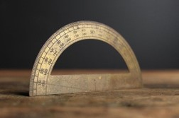
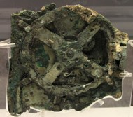
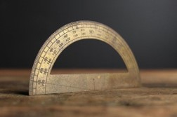
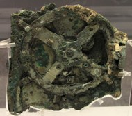

Kot najzgodnejši računalnik je težko določiti neko napravo, delno zaradi različnih interpretacij pojma »računalnik« skozi čas. Izvorno je pojem »računalnik« zaznamoval osebo, ki je opravljala numerične račune (človeški računalnik), v večini primerov s pomočjo mehanične računske naprave. Primeri zgodnjih mehanskih računskih naprav so abak, logaritemsko računalo in (sporno) kotomer ter mehanizem z Antikitere (iz 150-100 pr. n. št.).
  
 
Proti koncu srednjega veka je prišlo do ponovne okrepitve evropske matematike in inženirstva. Naprava iz leta 1623 je bila prva v nizu mehanskih kalkulatorjev evropskih inženirjev. Kakorkoli, nobena teh naprav ne ustreza sodobni definiciji računalnika, ker jih ni moč programirati.
Veliko kasneje se pojavijo mehanski kalkulatorji:
- okoli leta 1500 - Leonardo da Vinci - prvi mehanski kalkulator
- 1621 - pomično računalo (logaritmično računalo) - s pomočjo 2 logaritmičnih lestvic, si omogoča mnioženje in deljenje na podlagi Napierjevih pravil logaritmiranja.
- 1623 - Wilhelm Schickard je naredil stroj za opravljnje osnovnih aritmetičnih operacij, ki je deloval na principu zobatih koles
- 1642 - Blaise Pascal je naredil podoben stro. Oba sta za predstavitev desetiških števil uporabljala zobata kolesa z desetimi zobmi in mehanizem za prenos enote na naslednje kolo po obratu (danes v avtomobilu in električnem števcu)
- Gotfried Wilhelm Leibniz je leta 1671 izumil stroj za aritmetične operacije. Imel je še dva dodatna kolesa za predstavitev multiplikanda in multiplikatorja. Izumil je Leibnizovo kolo za množenje in deljenje
Napredek v izdelavi računalnikov se pojavi šele z industrijsko revolucijo.
Z njim povezujemo enega najpomembnejšega mož v zgodovini računalništva - Charles Babbage.
Konec 19. stoletja zamenjajo parne stroje elektromotorji in prične se razvoj elektromehanskih strojev.
Herman Hollerith - 1896 ustanovi podjetje Tabulating Machine Company - po letu 1924 IBM
- Tabelirni stroj uporablja luknjene kartice kot pomnilnik
Razvoj se nadaljuje v 30-ih letih 20. stoletja popolnoma ločeno:
- Nemčija: Konrad Zuse:
- ZDA: Howard Aiken
Vsi imajo podobno zasnovo kot analitični stroj C. Babbagea.
Sedaj pa lahko pogledamo posamezne generacije: